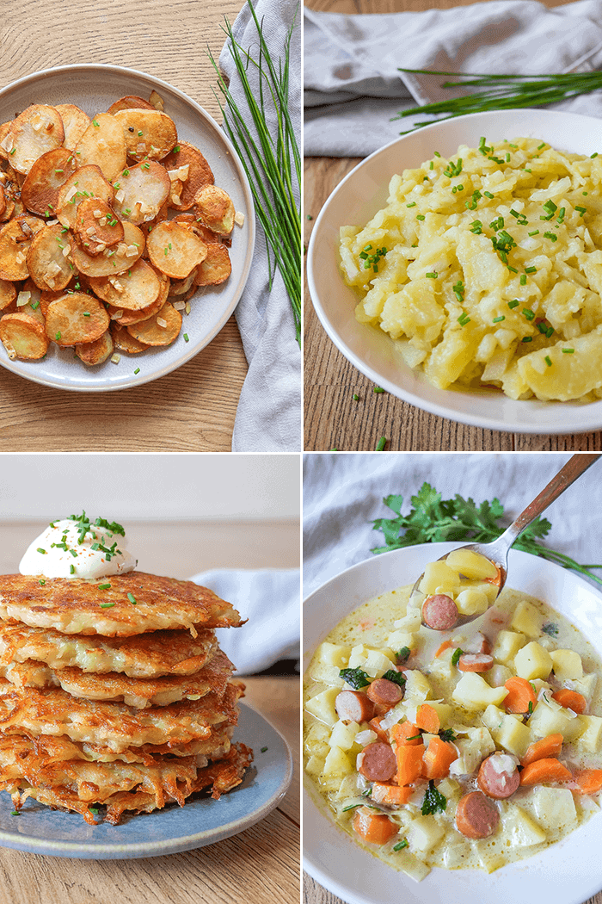

The diversity of EL POTATO
The Potato, truly a classic in the art of home cooking so much can be acheived with this one simple household ingredient. A lot of cooks pride their skills and even take it up to the immaginable labours of making this food a champion in culinary skill by mastering their craft so that that taste output is divine! As displayed above there is some examples of potato diversity.